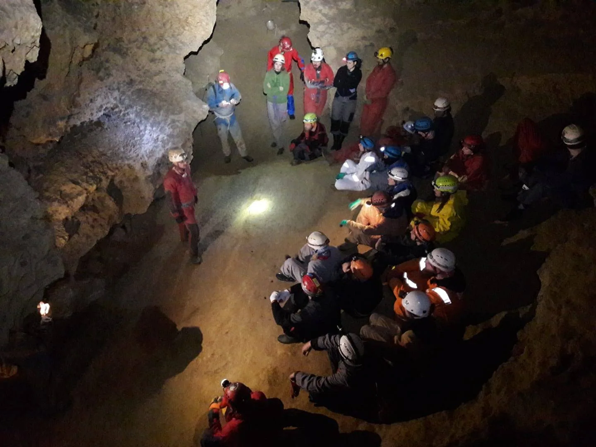

Završila 48. zagrebačka speleološka škola
I još jedna škola dođe kraju! Ovoga puta 48. po redu. Novi speleološki pripravnici, osim špagom po dupetu, dobili su i uvjerenja o zvanju, a kako je to sve proteklo u Radićevoj 23, pročitajte i pogledajte u nastavku.

Svečanom (u velebitaškom stilu) podjelom uvjerenja završila je 48. zagrebačka speleološka škola. Od 20 prijavljenih, 15 polaznika uspješno je položilo završni ispit i steklo naziv speleološkog pripravnika; Boris Čakarić, Andrija Češkić, Mia Felić, Emina Horvat Velić, Dorja Horvatić, Luka Ivančić, Tomislav Kovačević, Marin Mašina, Lucija Mihaljević, Anika Novak, Filip Pacak, Gorana Perić, Mia Šepčević, Stipe Vicković i Ana Vidić. U nešto više od mjesec dana, kroz predavanja srijedom te atraktivne i zanimljive špiljske izlete vikendima, polaznici su stekli sva nužna znanja potrebna za svoje buduće boravke u prirodi i bavljenje speleologijom. Dijelić toga možete vidjeti kroz priložene fotografije, kao i snimku dodjele uvjerenja. Miris špeka i luka sa iste ne možemo vam dočarati ali vi to svakako probajte vizualizirati. :)
Školu je vodio Marijan Sutlović. Svojim šišmiš-bebama obratio se posebno emotivnim govorom: [youtube https://www.youtube.com/watch?v=5wzOqtu8cLg&w=560&h=315] Instruktori i pomagači: Tea Selaković, Ana Bakšić, Ana Lipovac, Niko Jakovčev, Valentina Plemenčić, Domagoj Čajko, Marijan Sutlović, Tibor Bali, Marko Rakovac, Vedran Ferenčak, Darko Španja, Marina Grandić, Darko Jeras, Marko Ličko, Pava Vidić, Dalibor Paar, Marjan Prpić, Andrija Perušić, Luka Havliček, Mak Sedmak, Ivor Janković, Antonela Barbir, Lucija Kauf, Edo Vričić, Marin Mustapić, Čedo Josipović, Matea Talaja, Nikolina Kos, Tanja Šinko, Bruno Ačkar, Ivan Ban, Anja Žmegač, Igor Dodolović,Gabrijela Alfier, Filip Škarić, Gordan Bezjak, Loris Redovniković, Neven Prišuta. Kad smo se svi već lijepo zbrojili, idemo vidjeti i kako je to izgledalo te srijede u Radićevoj 23: [youtube https://www.youtube.com/watch?v=Ufhj-1VM--4&w=560&h=315] [gallery ids="1872,1873,1874,1875,1876,1877,1878,1879,1880,1881,1882,1883,1884,1885,1886,1887,1888,1889,1890,1891,1892,1893,1894,1895,1896,1897" type="rectangular"] Pogledaj Facebook galeriju